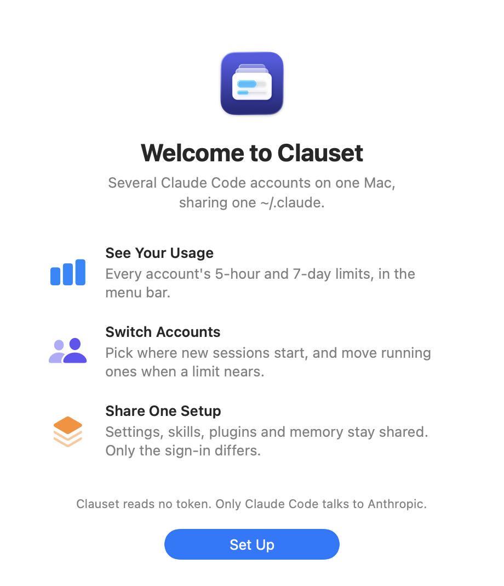
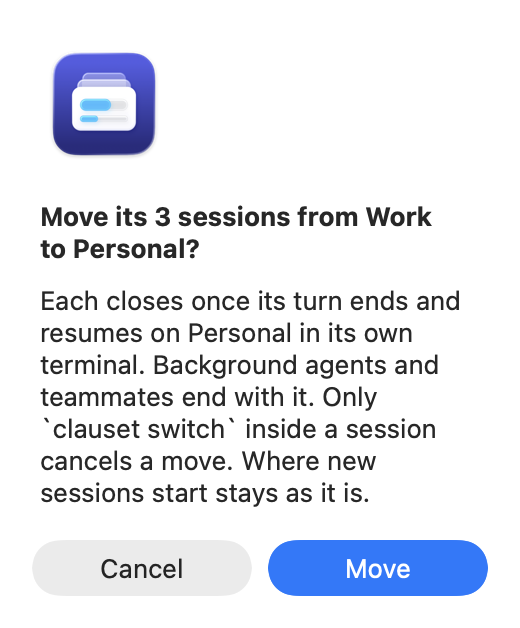
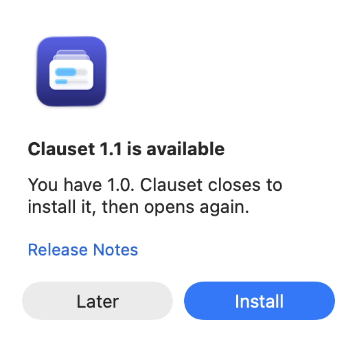

One Mac. Every Claude account.
See each account's limits, choose where new sessions start, and move a session before a limit stops it.
brew install --cask
Version {{version}}macOS 14.4 or laterYou can also install the CLI only
One menu for every account.
Each account keeps its own sign-in and its own limits. Clauset shows them side by side and lets you choose which one works next.
- See every limit.
- Each account shows its 5-hour window, its 7-day window and the weekly limit of one model, such as Fable. A bar turns orange from 70% and red from 90%.
- A warning before the limit.
- Pick a threshold, for every account or for one. Clauset posts a notification when an account passes it, and another when it hits the limit.
- Move a session mid-work.
- A session closes once its turn ends and resumes on the other account, in its own terminal. Background agents and teammates end with it.
- One setup, shared.
-
Settings, skills, plugins, MCP servers and memory come from one
~/.claude. Only the sign-in differs. - Pick where new sessions start.
-
Choose an account in the menu and every new
claudestarts there. A session started from another session stays on that session's account. - It reads no token.
-
clausetmakes no network call. Only the officialclaudebinary talks to Anthropic. The app asks before it goes online, then checks GitHub for a newer version once a week.
is at
18%
of its limit.
Pick an account. The menu bar follows.
Set up in one window.
Every step says what it writes before you allow it: the claude shim, two hooks, a status line and two
skills. Skip any you don't want.


No terminal needed.
Adding an account, signing in again and moving sessions all run inside the app. A sign-in opens your browser, and a move asks first.


Updates on your word.
A newer version shows in the menu and no window opens by itself. Choose to install, and the app downloads it from GitHub, checks its signature and opens again.

The rest of it.
- Menu bar, your way
- Follow the default account or pin one. Show the bars, the percentage, the name, or any mix.
- A limit per model
- The weekly limit of one model, such as Fable, sits beside the two windows.
- Claude in Chrome
- Name the account your browser extension is signed in to, and every other account reaches the same browser.
- Open at login
- Clauset starts with your Mac and stays in the menu bar. It asks first.
- Doctor
- Checks the shim, hooks, skills and status line, and every account's sign-in, Keychain item and links. It only reads.
- Status line
- Every session shows the account it runs on, and keeps the usage the menu shows.
- Two skills
-
/clausetruns Clauset inside a session.accountstells Claude what each command does and which ones wait for your word. - A directory you already use
-
clauset add --dirtakes in a config directory from another tool. Its sessions, memory and skills join the rest. - For tools that start agents
-
clauset run <account>starts Claude Code on one account, from a terminal or a tool such as Solo. - JSON for programs
-
clauset status --jsongives every account with its sign-in, usage and sessions. - Remove, and take back
- Removing an account leaves its directory and sign-in, so adding it again brings it back.
- MIT licensed
- The app and the CLI are one open repository. Read what it does before you run it.
The CLI behind the menu.
The app reads and changes everything through clauset, and the CLI works without the app. Inside a session,
clauset switch work moves it to another account.
To install the CLI without the app:
$ brew install mischasigtermans/tap/clauset-cli $ clauset setup
$ cargo install --locked clauset $ clauset setup
$ clauset ~/code/app runs on personal (the default) → personal * Ultra 5h █░░░░░░░░░ 12% resets 14:00 7d ██░░░░░░░░ 18% resets Tue 09:00 me@example.com, personal | usage 4 min ago work Team 5h ███░░░░░░░ 31% resets 13:00 7d ██████░░░░ 61% resets Sun 10:00 me@work.com, Acme | usage just now $ clauset switch work $ clauset use personal
Questions, answered.
- Can I use multiple Claude Code accounts on one Mac?
-
Yes. Each account keeps its own sign-in in its own config directory, and they run side by side: one terminal on work, another on
personal. Everything else is shared from one
~/.claude. - How do I see my Claude Code usage?
- The menu bar shows each account's 5-hour window, its 7-day window and the weekly limit of one model. The numbers come from what Claude Code itself stores, so an account shows them once a session has run on it.
- What happens when an account hits its usage limit?
- Clauset posts a notification that names the account and when its limit resets. You can then move the running session to another account. Clauset never switches accounts by itself.
- Does it keep limits separate per account, or only switch logins?
- Both. Every account keeps its own sign-in and its own limits, and Clauset shows each account's usage beside the others. Switching moves a session to another account and leaves every sign-in in place.
- Does Clauset read my tokens or send data anywhere?
-
It reads no token, and the CLI makes no network call. Only the official
claudebinary talks to Anthropic. The app asks before it goes online, then checks GitHub for a newer version once a week. - Is Clauset free?
- Yes. Clauset is free and open source under the MIT licence. It needs macOS 14.4 or later and Claude Code.
Download Clauset.
Clauset is free and open source. It needs macOS 14.4 or later and Claude Code, signed in to at least one account.